Table of Contents
3.1 Neurons
CARLsim currently supports Izhikevich spiking neurons with either current-based or conductance-based synapses (see 3.2 Synapses), but more neuron types are planned for the future. Different groups of neurons can be created from a one-dimensional array to a three-dimensional grid (see 3.3.2 Topography) via createSpikeGeneratorGroup and createGroup.
Differential equations can be integrated either with the forward Euler or Runge-Kutta method (see 12.2 Numerical Integration Methods).
3.1.1 Izhikevich Neurons (4-Parameter Model)
The Izhikevich neuron is a dynamical systems model that can be described by a two-dimensional system of ordinary differential equations:
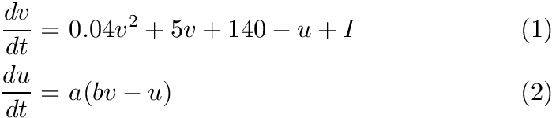
Here, (1) describes the membrane potential  for a given current 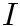, where is the sum of all synaptic and external currents; that is, 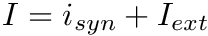 (see 3.2 Synapses). (2) describes a recovery variable 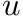; the parameter 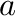 is the rate constant of the recovery variable, and the parameter 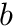 describes the sensitivity of the recovery variable to the subthreshold fluctuations of the membrane potential. All parameters in (1) and (2) are dimensionless; however, the right-hand side of (1) is in a form such that the membrane potential has mV scale and the time 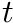 has ms scale. 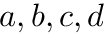 are open parameters that have different values for different neuron types.
for a given current 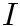, where is the sum of all synaptic and external currents; that is, 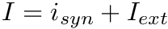 (see 3.2 Synapses). (2) describes a recovery variable 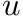; the parameter 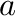 is the rate constant of the recovery variable, and the parameter 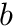 describes the sensitivity of the recovery variable to the subthreshold fluctuations of the membrane potential. All parameters in (1) and (2) are dimensionless; however, the right-hand side of (1) is in a form such that the membrane potential has mV scale and the time 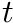 has ms scale. 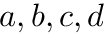 are open parameters that have different values for different neuron types.
In contrast to other simple models such as the leaky integrate-and-fire (LIF) neuron, the Izhikevich neuron is able to generate the upstroke of the spike itself. Thus the voltage reset occurs not at the threshold, but at the peak ( 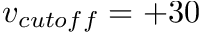) of the spike. The action potential downstroke is modeled using an instantaneous reset of the membrane potential whenever reaches the spike cutoff, plus a stepping of the recovery variable:
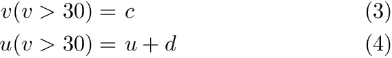
The inclusion of in the model allows for the simulation of typical spike patterns observed in biological neurons. The four parameters can be set to simulate different types of neurons. For example, regular spiking (RS) neurons (class 1 excitable) have 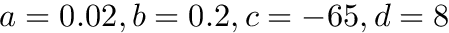. Fast spiking (FS) neurons (class 2 excitable) have 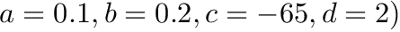. For more information on different neuron types, see Izhikevich (2003, 2004).
3.1.2 Izhikevich Neurons (9-Parameter Model)
The 9-parameter izhikevich neuron model is equivalent to the 4-parameter one. Larger number of parameters is used for convenience in describing various neuron types.
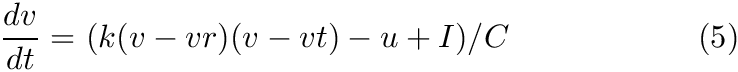
Here, (5) describes the membrane potential for a given current , where is the sum of all synaptic and external currents; that is, (see 3.2 Synapses).
The parameter 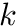 is a rate constant of the membrane potential, and can be found using the rheobase and the input resistance of a neuron. The parameter 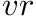 is the resting membrane potential. The parameter 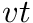 is the instantaneous threshold potential. The parameter 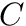 is the membrane capacitance.
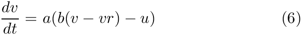
Here, (15) describes a recovery variable ;
The parameter is the rate constant of the recovery variable. The parameter describes the sensitivity of the recovery variable to the subthreshold fluctuations of the membrane potential. The parameter is the resting membrane potential.
All parameters in (5) and (6) are dimensionless; however, the right-hand side of (5) is in a form such that the membrane potential has mV scale and the time has ms scale. is voltage, is the recovery variable, is the input current, and 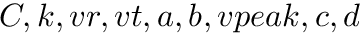 are open parameters that have different values for different neuron types.
In contrast to other simple models such as the leaky integrate-and-fire (LIF) neuron, the Izhikevich neuron is able to generate the upstroke of the spike itself. Thus the voltage reset occurs not at the threshold, but at the peak ( 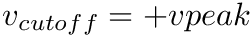) of the spike. The action potential downstroke is modeled using an instantaneous reset of the membrane potential whenever reaches the spike cutoff, plus a stepping of the recovery variable:
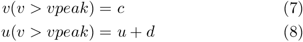
Regular spiking (RS) neurons (class 1 excitable) have 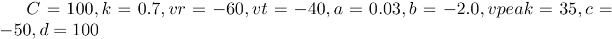. Fast spiking (FS) neurons (class 2 excitable) have 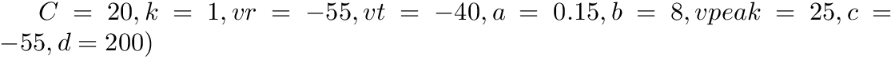. For more information on different neuron types, see Izhikevich (2003, 2004). For more information about 9-parameter model see Izhikevich (2007).
We do not recommend to use forward-Euler when working with the 9-parameter Izhikevich model. Use Runge-Kutta instead (see 12.2.2 Runge-Kutta Method).
- Since
- v3.1
3.1.3 Multi-Compartment Neurons
Neurons in a group can be extended to include multiple compartments by calling CARLsim::setCompartmentParameters on a group and connecting them via CARLsim::connectCompartments.
In this case, the total current of (1) and (5) is extended to include a dendritic current, 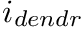 in pA; that is, 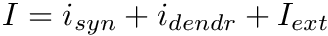. The dendritic current at each compartment consists of the currents coming from the down ("mother") compartment and up ("daughter") compartments:
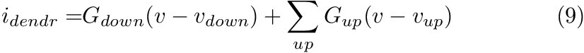
with the values of the conductances  and 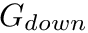 specified in CARLsim::setCompartmentParameters.
and 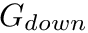 specified in CARLsim::setCompartmentParameters.
For more information on multi-compartmental neurons, see Izhikevich and Edelman (2008), especially their supporting information.
We do not recommend to use forward-Euler when working with multi-compartment neurons. Use Runge-Kutta instead (see 12.2.2 Runge-Kutta Method).
- Note
- The maximum number of allowed compartmental connections per neuron is controlled by the parameter MAX_NUM_COMP_CONN in carlsim_definitions.h.
- Since
- v3.1
3.1.4 Leaky Integrate-and-Fire (LIF) neurons
The support for LIF neurons has been added in CARLSim 4.0. LIF model and its variants are probably the most well known model of spiking point neurons, largely due their to simple membrane voltage dynamics favored for dynamical system analysis and hardware implementation.
The parameter is a rate constant of the membrane potential, and can be found using the rheobase and the input resistance of a neuron. The parameter is the resting membrane potential. The parameter  is the membrane resistance.
is the membrane resistance.
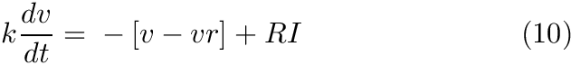
3.2 Synapses
Spiking neural networks deliver information using spikes via structures called synapses. In biology, synapses pass information from one neuron to another via a chemical signal (electrical synapses also exist but are not modeled in CARLsim). Communication between synapses is, in general, unidirectional. Synapses are broken into two components: one component located on the neuron sending the information (the presynaptic neuron) and one component located on the neuron receiving the information (the postsynaptic neuron). The two synapse components are separated by a physical gap between the pre and postsynaptic neurons called the synaptic cleft. Information is passed from the presynaptic neuron to the postsynaptic neuron when the presynaptic component of the synapse releases neurotransmitters that cross the synaptic cleft and bind to postsynaptic receptors that result in a current influx into the postsynaptic neuron. The sum of many synaptic current contributions change the postsynaptic neuron voltage, causing it to spike if the voltage threshold is crossed.
CARLsim supports two synapse model descriptions. The current-based (CUBA) description uses a single synaptic current term while the conductance-based (COBA) description calculates the synaptic current using more complex conductance equations for each synaptic receptor-type. Both CUBA and COBA current contributions are influenced by the synaptic weight of the synapse. We next discuss each synapse model specifically.
(see Chapter 4: Connections).
3.2.1 CUBA
When current based (CUBA) mode is used, no conductances are present. The strength of the resulting current is directly proportional to the synaptic weight. Additionally, the total synaptic current at postsynaptic neuron 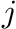,  , due to a spike from presynaptic neuron 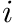 is given at any point in time by (5):
, due to a spike from presynaptic neuron 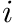 is given at any point in time by (5):
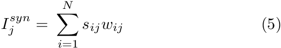
where 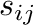 is 1 if the neuron is spiking and 0 otherwise, 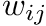 is the strength of the synaptic weight between postsynaptic neuron and presynaptic neuron , and N is the total amount of presynaptic connections onto postsynaptic neuron .
CUBA mode is the default behavior of all neurons. CARLsim does not currently support mixed modes consisting of some neurons with conductances and others without conductances in the same simulation.
- Note
- Because CUBA mode has synaptic currents that last for a single time step, and COBA mode has synaptic currents that decay over time, switching from CUBA mode to COBA mode usually requires the user to reduce the synaptic weights as the resulting currents will be much larger in COBA mode.
3.2.2 COBA
When conductance-based (COBA) mode is used, there are conductances with exponential decays present. If the synaptic connection is excitatory then AMPA and NMDA decay values are used. If the synaptic connection is inhibitory then GABA A and GABA B decay values are used. Equation (6) shows the corresponding current, 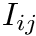 in postsynaptic neuron , due to inputs from N presynaptic neurons (denoted by ).
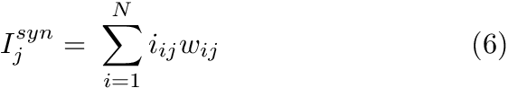
Here we drop the 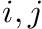 notation and assume the 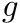 values pertain to a specific synapse ( ) and the values pertain to a specific postsynaptic neuron, . The total current from a particular synapse can either be excitatory ( 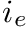) or inhibitory ( 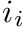). They are described in equations (7) and (8), below:
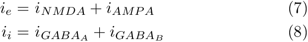
The excitatory current is comprised of an AMPA current ( 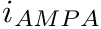) and a voltage dependent NMDA current ( 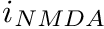). They are described in equations (9) and (10).
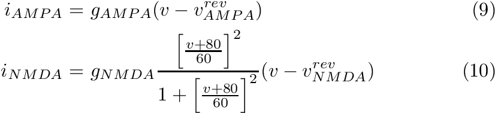
Here, is the conductance, is the postsynaptic voltage, and 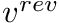 is the reversal potential. Both and are specific to a particular ion channel/receptor. The inhibitory current is comprised of a GABA A current ( 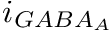) and a GABA B current ( 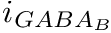) shown in equations (11) and (12).
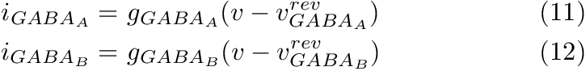
The conductance, , for each ion channel/receptor, is given in the general form equation (13).
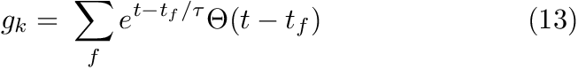
Where 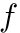 indicates a particular spike event, 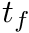 represents the time of this spike event, and is the Heaviside function.
The code snippet below shows how a user would first set a simulation that uses conductances using the CARLsim::setConductances function. If the CARLsim::setConductances is called with just the true argument:
then, the default decay constant values will be used for the conductances (tdAMPA=5ms, tdNMDA=150ms, tdGABAa=6ms, tdGABAb=150ms) (instantaneous rise time).
The user can also specify the decay constant times themselves:
It should be noted that users can specify a rise time constant for the slow the synaptic conductances (NMDA and GABAb) in addition to specifying a decay time constant. The rise time constants are set to zero by default. Below we show a user setting the rise times:
Users can also explicitly set the default conductance time constant parameters to be used in the simulation with the command CARLsim::setDefaultConductanceTimeConstants.
- Note
- A pre-synaptic spike increases both post-synaptic AMPA and NMDA (GABAa and GABAb) for excitatory (inhibitory) connections.
- Receptor-specific gain factors can be speficied to vary the AMPA-NMDA and GABAa-GABA ratio
see 4.1.4 Synaptic Receptor-Specific Gain Factors
3.3 Groups
3.3.1 Creating Groups
To create a group of Izhikevich neurons, simply specify a name (e.g., "output"), the number of neurons (e.g., 100), and a type:
Here, EXCITATORY_NEURON denotes that the neurons in the group are glutamatergic. Neurons with GABAergic synapses are supported with the INHIBITORY_NEURON keyword.
To refer to this group in later method calls, the CARLsim::createGroup method returns a group ID, gOut.
Next, specify the Izhikevich parameters, in this case for class 1 excitability (regular spiking) neurons (see 3.1.1 Izhikevich Neurons (4-Parameter Model)):
where 0.02f, 0.2f, -65.0f, and 8.0f correspond respectively to the a, b, c, and d parameters of the Izhikevich neuron. Note we used gOut from the createGroup call above to reference the group ID.
To create a group of spike generators, the user also specifies a name, size, and type:
3.3.2 Topography
Neurons in a group can be arranged into a (up to) three-dimensional (primitive cubic) grid using the Grid3D struct, and connections can be specified depending on the relative placement of neurons via CARLsim::connect. This allows for the creation of networks with complex spatial structure.
Each neuron in the group gets assigned a (x,y,z) location on a 3D grid centered around the origin, so that calling Grid3D(Nx,Ny,Nz) creates coordinates that fall in the range [-(Nx-1)/2, (Nx-1)/2], [-(Ny-1)/2, (Ny-1)/2], and [-(Nz-1)/2, (Nz-1)/2]. The resulting grid is a primitive cubic Bravais lattice with cubic side length 1 (arbitrary units). The primitive (or simple) cubic crystal system consists of one lattice point (neuron) on each corner of the cube. Each neuron at a lattice point is then shared equally between eight adjacent cubes. An example is shown in the figure below.
Examples:
- Grid3D(1,1,1) will create a single neuron with location (0,0,0).
- Grid3D(2,1,1) will create two neurons, where the first neuron (ID 0) has location (-0.5,0,0), and the second neuron (ID 1) has location (0.5,0,0).
- Grid3D(1,1,2) will create two neurons, where the first neuron (ID 0) has location (0,0,-0.5), and the second neuron (ID 1) has location (0,0,0.5).
- Grid3D(2,2,2) will create eight neurons, where the first neuron (ID 0) has location (-0.5,-0.5,-0.5), the second neuron has location (0.5,-0.5,-0.5), the third has (-0.5,0.5,-0.5), and so forth (see figure below).
- Grid3D(3,3,3) will create 3x3x3=27 neurons, where the first neuron (ID 0) has location (-1,-1,-1), the second neuron has location (0,-1,-1), the third has (1,-1,-1), the fourth has (-1,0,-1), ..., and the last one has (1,1,1).
- etc.
The 3D location of a neuron can be queried in all CARLsim states using the method CARLsim::getNeuronLocation3D. This allows, for example, for user-defined connections to be built based on 3D location (see 4.3 User-Defined Connections).
The following code snippet creates a group of 500 excitatory neurons arranged on a 10x10x5 three-dimensional (primitive cubic) grid:
Note that in this example, the Grid3D parameter replaces the integer values (for number of neurons) used for CARLsim::createGroup in 3.3.1 Creating Groups. In fact, creating a group with N neurons is the same as arranging N neurons on a Nx1x1 grid:
- Since
- v3.0
3.5 References
Izhikevich E.M. (2003) Simple Model of Spiking Neurons. IEEE Transactions on Neural Networks, 14:1569-1572.
Izhikevich E.M. (2004) Which Model to Use for Cortical Spiking Neurons? IEEE Transactions on Neural Networks, 15:1063-1070.
Izhikevich E.M. (2007) Dynamical Systems in Neuroscience - The Geometry of Excitability and Bursting.